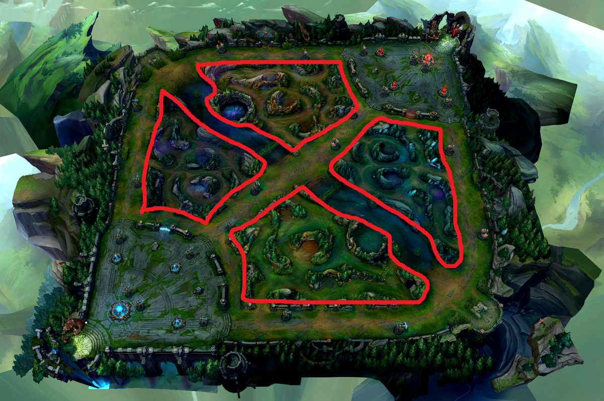

Der Jungler spielt abseits der Lanes im sogenannten Dschungel und farmt dort neutrale Monster, um Erfahrung und Gold zu sammeln. Seine Hauptaufgabe ist es, durch Ganks (Überraschungsangriffe) die Lanes zu unterstützen und so seinem Team Vorteile zu verschaffen. Außerdem kontrolliert der Jungler wichtige Ziele wie den Drachen oder Baron Nashor und sichert mit Wards die Karte. Ein guter Jungler hat viel Map Awareness, trifft schnelle Entscheidungen und koordiniert sich eng mit den Teammitgliedern.
